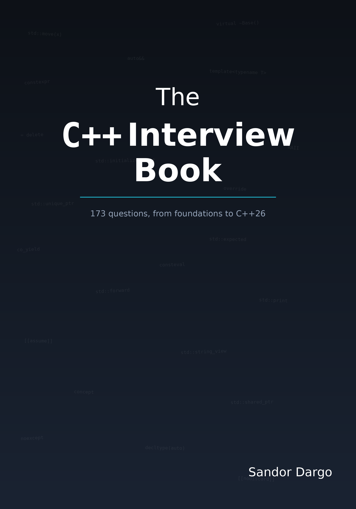

By Sandor Dargo
173 questions from auto to C++26. Updated for how interviews actually work in 2026.
What's inside
Every question is tagged by difficulty (Junior, Mid, or Senior), cross-referenced to related questions, and followed by the follow-ups an interviewer would actually ask.
Why this book
AI has changed what interviewers test. Rote syntax recall is cheap now. This book focuses on the "why" and "when" — the understanding that survives follow-up questions and does not depend on having a tool open in another tab.
The 2026 edition cut 19 duplicate questions from the original and added 40+ new ones covering C++23 and C++26. Every question earns its place. Cross-references replace repetition.
Follow the 100-day schedule for structured daily study with spaced repetition. Or jump straight to the topic you need before tomorrow's interview. The book works both ways.
Sample question
std::move actually do?
Mid
std::move does not move anything. At runtime, it does nothing at all. It does not even generate a single byte of executable code.
std::move is in fact just a tool to cast whatever its input is to an rvalue reference. That is all it does — an unconditional cast.
Under the hood, std::move is essentially a static_cast to an rvalue reference:
// Simplified implementation of std::move template<typename T> constexpr std::remove_reference_t<T>&& move(T&& param) noexcept { return static_cast<std::remove_reference_t<T>&&>(param); }
Applying std::move to an object tells the compiler that the object is eligible to be moved from. Whether a move actually happens depends on whether the receiving context — a move constructor, a move assignment operator, or any function overloaded on rvalue references — exists and is selected by overload resolution.
About the author
Sandor Dargo is a C++ developer and the author of sandordargo.com, where he writes about C++, software craftsmanship, and career growth. He published the first edition of this book in 2021 as Daily C++ Interview; this 2026 edition is a complete restructuring with new content covering C++23, C++26, and the realities of interviewing in a world where AI tools are part of everyday development.